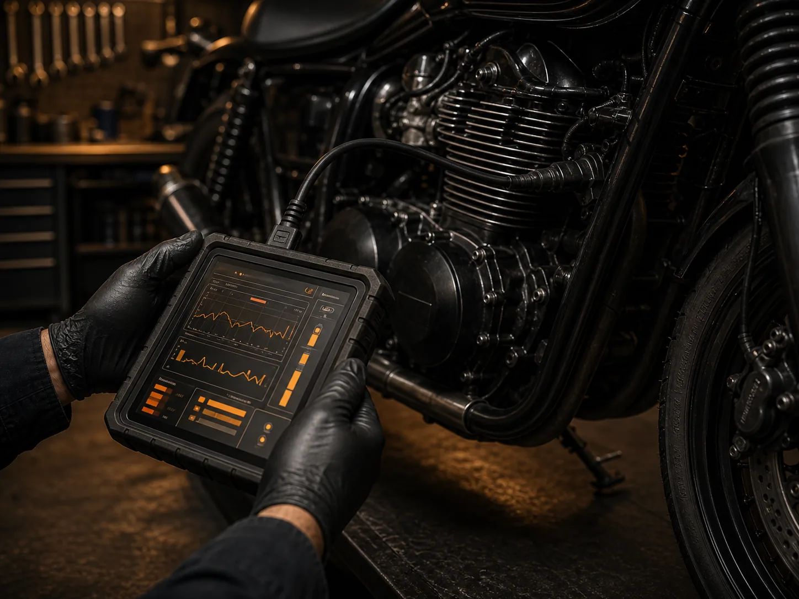
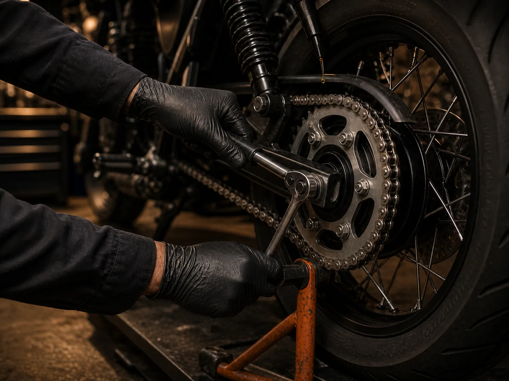
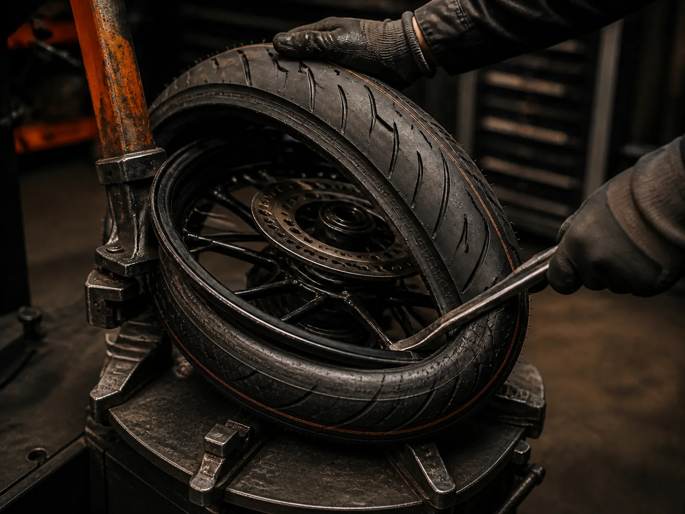

Routine servicing
Flagship · 42-Point Multi-CheckCondition-led comprehensive maintenance across fluids, filters, fasteners, chain, brakes, controls and tyres, finished with a complete road-readiness test.
Routine care, wear-item replacement and structured fault finding—explained clearly and carried out with the right tools.
Each generated photograph is unique to its service. The rest of the service catalogue uses lightweight professional icons for speed and clarity.




Condition-led comprehensive maintenance across fluids, filters, fasteners, chain, brakes, controls and tyres, finished with a complete road-readiness test.
Drain, filter replacement and refill with the correct oil specification, followed by warm level and leak checks.
Tread assessment, careful removal, bead seating, balancing and pressure setup for your motorcycle and load.
Pad, disc, caliper and fluid inspection with ultrasonic pin cleaning, slider lubrication and bubble-free bleed.
Chain slack, sprocket wear and laser wheel alignment checked, then cleaned, adjusted and lubricated to spec.
Charging-system and battery health checks, correct specification matching, terminal preparation and installation.
Scan data, mechanical compression checks and targeted electrical testing to trace warning lights and faults.
No mechanical vocabulary required.